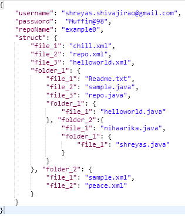
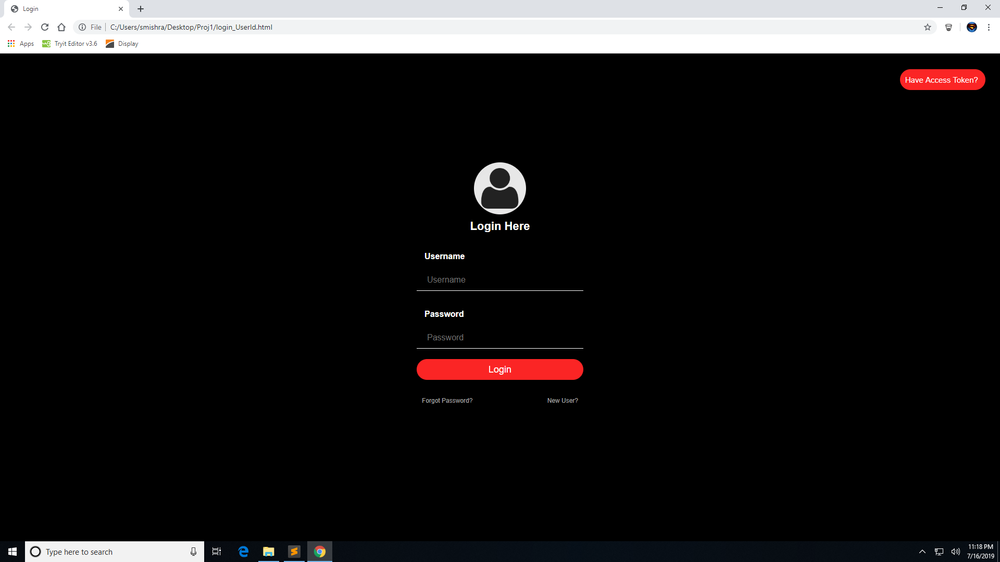

JULY 17th
Changed the Front end of the Create New Template Page. Tried to get the data of the form in the front end using python API. Extract the template structure entered by the user from the front end form and push it in Firebase. Worked on the Android Application to analyse and display the pitch of the voice that the phone’s microphone continuously records. Worked on the Android Application to analyse and display the pitch of the voice that the phone's microphone continuously records. Worked for displaying the retrieved data from the back end on the web page. Researched on Prinicipal Component Analysis method and worked on the accelerometer data in CSV file.
Git Repository

Firebase
Login Page
